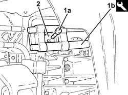
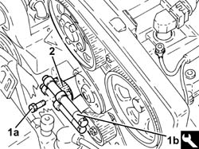
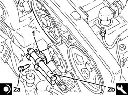
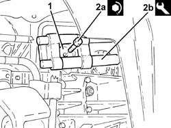

1092E24 counter-rotating shaft pulley - r + r with toothed belt removed
- Path
- Procedures > 10 ENGINE > 1092 VARIOUS ENGINE COMPONENT CONTROLS > 1092E counter-rotating shaft drive > 1092E24 counter-rotating shaft pulley - r + r with toothed belt removed
- Kind
- repair procedure (removal / refitting; the operation number is the code)
- Applies to
- all engines; all production periods
- Interactive page
- https://sloeber94.github.io/elrnDB-a156/en/#/3237720
Applies to: all engines; all production periods
Applies to: engines: 2.0 JTS, 2.0 JTS; all production periods
 Removing
Removing
 Refitting
RefittingPROCEED AS FOLLOWS FOR THE LEFT COUNTER-BALANCE SHAFT COVER.
1. Undo the bolt (1a) for the left counter-balance shaft pulley using the tool (1b) for counter-torque.
 | Name | Country |
|---|---|---|
1b | Counter-torque | 1.820.286.000 |
2. Remove the left counter-balance shaft pulley.

Applies to: engines: 2.0 JTS, 2.0 JTS; all production periods
PROCEED AS FOLLOWS FOR THE RIGHT COUNTER-BALANCE SHAFT COVER.
1. Undo the bolt (1a) for the right counter-balance shaft pulley using the tool (1b) for counter-torque.
| Name | Country |
|---|---|---|
1b | Counter-torque | 1.820.286.000 |
2. Remove the right counter-balance shaft pulley.

Applies to: engines: 2.0 JTS, 2.0 JTS; all production periods
Refitting
RemovingPROCEED AS FOLLOWS FOR THE RIGHT COUNTER-BALANCE SHAFT COVER.
1. Place the right counter-balance shaft pulley back in its housing.
2. Tighten the bolts (2a) for the right counter-balance shaft pulley to the recommended torque using the tool (2b) for counter-torque.
 | Fastening | Component | Ø | Value (daNm) |
|---|---|---|---|---|
2a | Bolt | COUNTER-ROTATING SHAFT PULLEY | M10 | (Counter balance shaft side) 4.5 ÷ 5.5 |
| Name | Country |
|---|---|---|
2b | Counter-torque | 1.820.286.000 |

Applies to: engines: 2.0 JTS, 2.0 JTS; all production periods
PROCEED AS FOLLOWS FOR THE LEFT COUNTER-BALANCE SHAFT COVER.
1. Place the left counter-balance shaft pulley back in its housing.
2. Tighten the bolts (2a) for the left counter-balance shaft pulley to the recommended torque using the tool (2b) for counter-torque.
| Fastening | Component | Ø | Value (daNm) |
|---|---|---|---|---|
2a | Bolt | COUNTER-ROTATING SHAFT PULLEY | M10 | (Counter balance shaft side) 4.5 ÷ 5.5 |
| Name | Country |
|---|---|---|
2b | Counter-torque | 1.820.286.000 |
